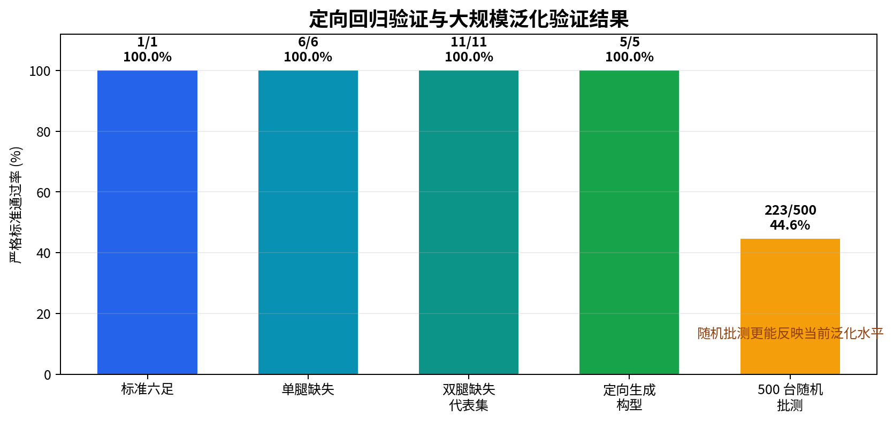
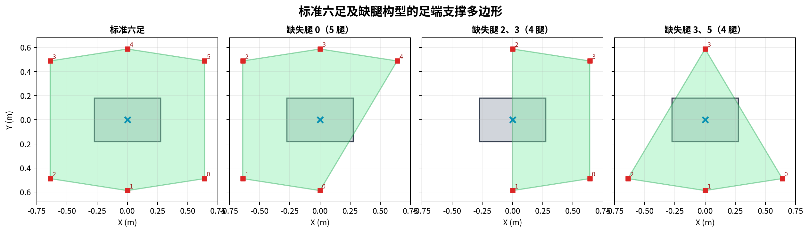
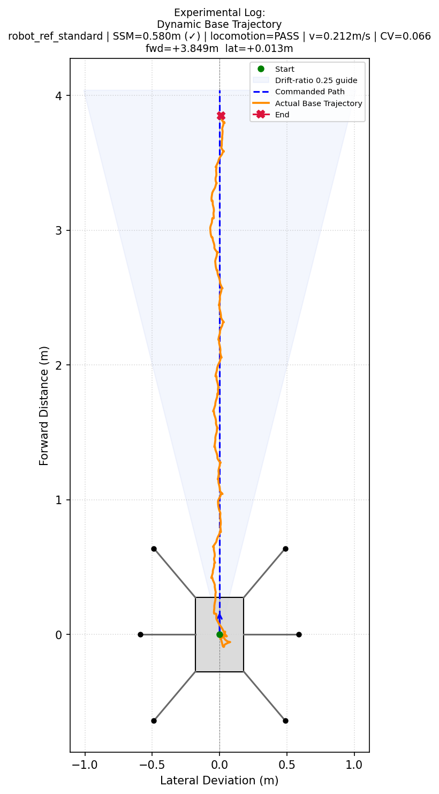
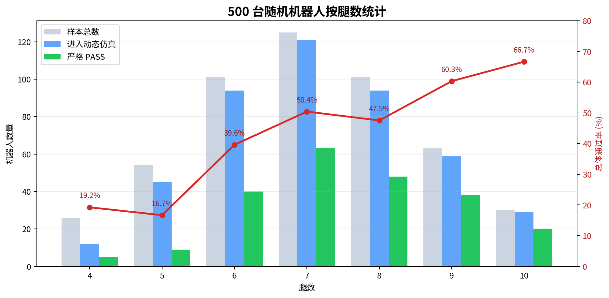
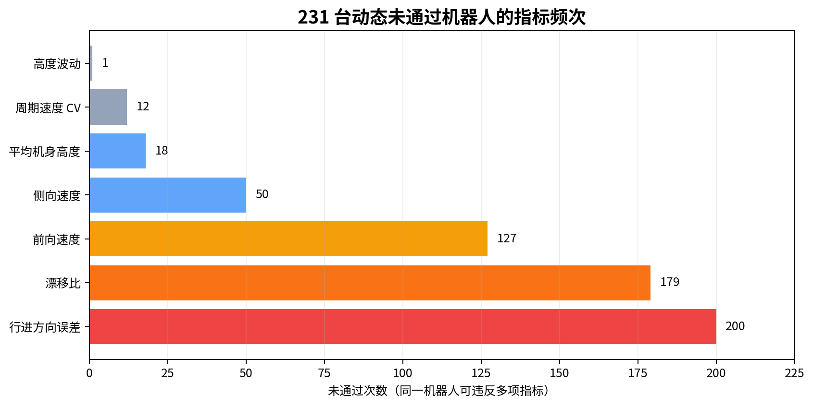
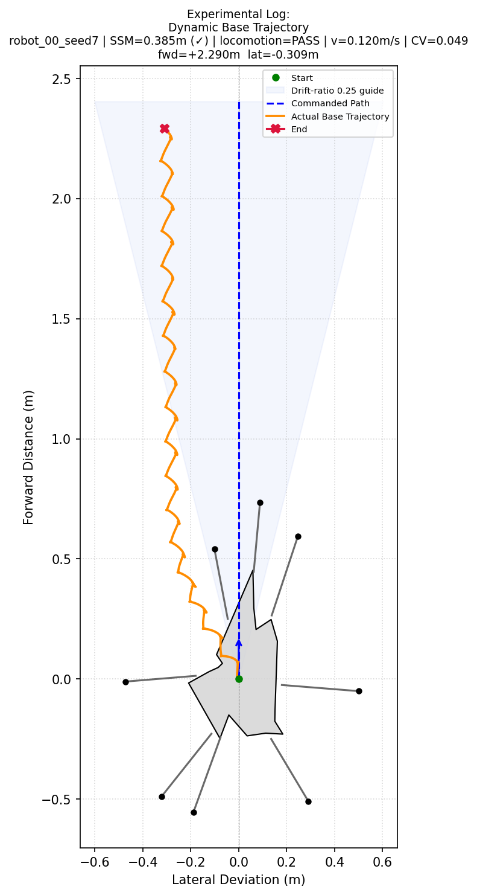
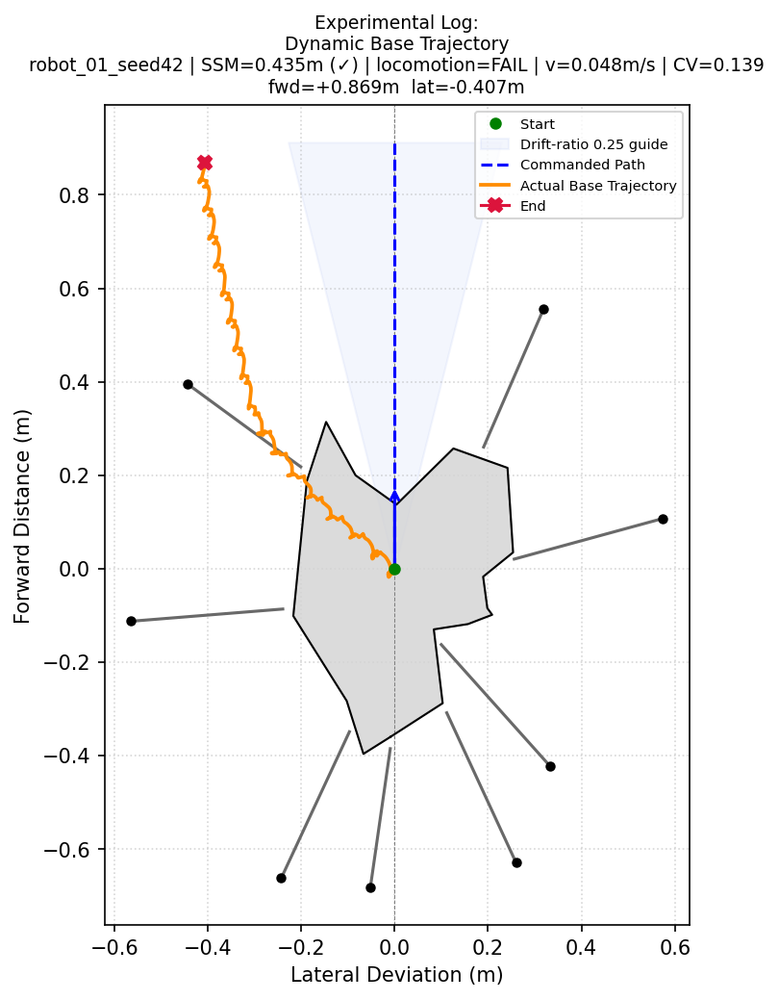

形态适配、缺腿验证与 500 台随机机器人批量仿真
| 汇报日期 | 2026 年 8 月 18 日 |
| 汇报人 | ________________ |
| 指导教师 | ________________ |
| 仿真平台 | Isaac Gym GPU PhysX |
| 1/1标准六足 | 6/6单腿缺失 | 11/11双腿缺失代表集 | 223/500随机批测严格通过 |
当前已经证明算法能够处理标准六足、缺腿构型和部分未知多足构型，但大规模结果也表明尚不能宣称对所有任意构型普适。现阶段主要瓶颈从“能否产生周期运动”转变为“能否选择正确行走方向并抑制侧向漂移”。


所有最终确认均运行 1200 步（60 Hz，共 20 s），去除前 20% 启动阶段后计算稳态指标。以下七项必须全部满足：
| 指标 | 通过条件 | 意义 |
|---|---|---|
| 前向平均速度 | ≥ 0.020 m/s | 排除原地踏步或位移过小 |
| 侧向平均速度绝对值 | ≤ 0.020 m/s | 限制横向平移 |
| 漂移比 | ≤ 0.25 | 侧向速度/前向速度 |
| 实际行进方向误差 | ≤ 12° | 限制弧线或错误方向 |
| 周期平均速度 CV | ≤ 0.35 | 衡量周期之间的匀速性 |
| 机身高度标准差 | ≤ 0.035 m | 限制上下振荡 |
| 平均机身高度 | ≥ 0.20 m | 排除倒地滑行 |
轨迹不再直接以世界坐标 X/Y 作为前进与横向距离，而是投影到每台机器人自动选择的“前进轴—侧向轴”坐标系。图中加入起点、终点、期望路径和漂移比 0.25 参考区域；使用轨迹 JSON 重新投影核验后，终点指标误差为 0。

| 构型 | SSM (m) | 前向速度 | 侧向速度 | 漂移比 | 方向误差 | 速度 CV | 结果 |
|---|---|---|---|---|---|---|---|
| 标准六足 | 0.580 | 0.212 m/s | 0.004 m/s | 0.019 | 1.07° | 0.066 | PASS |
标准六足通过全部七项标准；20 s 仿真中的前向位移约为 3.85 m，横向位移约为 0.013 m。
| 缺失腿 | SSM (m) | 前向速度 | 侧向速度 | 漂移比 | 方向误差 | 速度 CV |
|---|---|---|---|---|---|---|
| 0 | 0.331 | 0.161 | 0.010 | 0.059 | 3.40° | 0.086 |
| 1 | 0.510 | 0.087 | 0.008 | 0.088 | 5.01° | 0.085 |
| 2 | 0.331 | 0.059 | 0.005 | 0.079 | 4.51° | 0.092 |
| 3 | 0.331 | 0.068 | -0.007 | 0.102 | 5.80° | 0.147 |
| 4 | 0.510 | 0.085 | -0.008 | 0.091 | 5.23° | 0.103 |
| 5 | 0.331 | 0.165 | -0.010 | 0.062 | 3.53° | 0.069 |
前向速度范围为 0.059–0.165 m/s，最大漂移比为 0.102，最大周期速度 CV 为 0.147。
| 缺失组合 | 前向速度 | 侧向速度 | 漂移比 | 方向误差 | 速度 CV | 最终候选类型 |
|---|---|---|---|---|---|---|
| 0、1 | 0.029 | -0.002 | 0.062 | 3.58° | 0.078 | 侧轴交替 |
| 0、2 | 0.027 | -0.003 | 0.101 | 5.80° | 0.148 | 相位交换 |
| 0、3 | 0.170 | -0.010 | 0.061 | 3.51° | 0.196 | 正弦步态 |
| 0、5 | 0.028 | -0.005 | 0.191 | 10.81° | 0.079 | 正弦步态 |
| 1、2 | 0.030 | 0.002 | 0.064 | 3.68° | 0.168 | 侧轴交替 |
| 1、4 | 0.135 | 0.009 | 0.067 | 3.84° | 0.109 | 交替步态 |
| 2、3 | 0.027 | -0.005 | 0.179 | 10.15° | 0.077 | 反向轴正弦 |
| 2、5 | 0.147 | -0.006 | 0.041 | 2.33° | 0.080 | 交替步态 |
| 3、4 | 0.039 | -0.005 | 0.117 | 6.65° | 0.223 | 方向闭环修正 |
| 3、5 | 0.028 | 0.005 | 0.196 | 11.11° | 0.158 | 补充确认 |
| 4、5 | 0.038 | -0.000 | 0.009 | 0.49° | 0.091 | 方向闭环修正 |
双腿缺失构型速度范围为 0.027–0.170 m/s。部分构型需要侧向或反向行走才能通过，说明严重不对称机器人不能固定使用机身正前方作为行走方向。
| 机器人 | 腿数 | 前向速度 | 漂移比 | 方向误差 | 速度 CV | 结果 |
|---|---|---|---|---|---|---|
| robot_00_seed7 | 8 | 0.021 | 0.035 | 2.00° | 0.253 | PASS |
| robot_01_seed42 | 8 | 0.044 | 0.206 | 11.61° | 0.050 | PASS |
| robot_02_seed137 | 9 | 0.080 | 0.060 | 3.41° | 0.184 | PASS |
| robot_03_seed256 | 8 | 0.068 | 0.144 | 8.18° | 0.097 | PASS |
| robot_04_seed512 | 6 | 0.118 | 0.037 | 2.13° | 0.064 | PASS |
使用固定随机源 20260818 生成 500 台 4–10 腿机器人，另外加入 1 台标准六足参照。标准六足不计入以下随机样本统计。
| 500随机机器人 | 454进入动态仿真 | 223严格 PASS | 44.6%总体通过率 |
| 项目 | 数量 | 占 500 台比例 |
|---|---|---|
| 静态稳定性通过并进入动态仿真 | 454 | 90.8% |
| 静态不稳定、跳过动态仿真 | 46 | 9.2% |
| 严格直线匀速 PASS | 223 | 44.6% |
| 完成动态仿真但未通过严格标准 | 231 | 46.2% |
在 454 台动态仿真样本内，通过率为 223/454 = 49.1%。

| 腿数 | 总数 | 进入动态 | PASS | 总体通过率 | 动态样本通过率 |
|---|---|---|---|---|---|
| 4 | 26 | 12 | 5 | 19.2% | 41.7% |
| 5 | 54 | 45 | 9 | 16.7% | 20.0% |
| 6 | 101 | 94 | 40 | 39.6% | 42.6% |
| 7 | 125 | 121 | 63 | 50.4% | 52.1% |
| 8 | 101 | 94 | 48 | 47.5% | 51.1% |
| 9 | 63 | 59 | 38 | 60.3% | 64.4% |
| 10 | 30 | 29 | 20 | 66.7% | 69.0% |

行进方向误差出现 200 次、漂移比超限出现 179 次、前向速度不足出现 127 次，而周期速度 CV 超限仅出现 12 次。由此可以判断，当前主要问题是未知构型的方向选择和侧向力不平衡，而不是周期步态本身不稳定。
 |
 |
| PASS：robot_00_seed7，能够持续前进，但仍存在可见侧向偏置。 | FAIL：robot_01_seed42，侧向位移较大，漂移比超出标准。 |
图 6 500 台统一批测流程中的通过与未通过轨迹示例。
[x, y, yaw, z] 样本。Incomplete articulation 警告，虽未造成批次中断，但仍需研究其对多环境复位一致性的潜在影响。